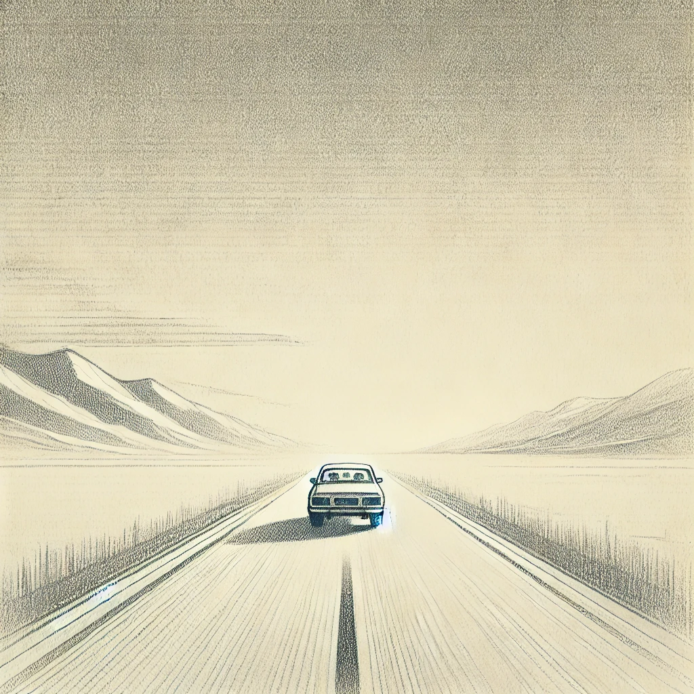

작가
정보라
20230331
2025년
감상평에 대한 AI평가
피해자가 가해자로 뒤바뀐 순간, 그 전까지 그 사람 때문에 마음 졸이던 것이 무색하게 시원한 감정이 들었다.

감상평에 대한 AI평가
~~~~AI평가~~~~~
이 괴로움은 고립된 사회, 그것을 나누는 미래, 그리고 기억이 가해자와 경계가 무너지는 순간을 위한 것입니다 .
1. 기억을 사고파는 사회 – 완벽한 질문
유명한 인물들은 자신의 기억을 돈으로 바꾸는 설정
인류가 기억 과 감정을 공유할 수 있도록 하는 것입니까?
이 세계는 희망이라는 사냥꾼적인 고립된 공간 에서, 점점 더 비인간적인 태도를 취하는 내죠.
이러한 설정은 기억과 인간성 사고파는 미래 사회에 대한 경고 처럼 느껴집니다.
2. 주인공의 입장 – 가해자로
주인공은 처음에는 신기 해서, 마지막에는 가해자로 변하는 선택을 하게 되는 것 같아요.
915호의 빼고 싶어하는, 결국엔 신뢰할 수 있는 것을 선택 했습니다 .
중요한 점은, 이 과정에서 주인공이 갈등을 겪는 모습이 거의 없고, 희열을 가지는 것입니다.
이 부분은 독자적으로 감정을 주면서, “폭력은 부분적으로 할 수 있는가?” "가해자와의 경계는 눈치채지 못하는 건가요?" 같은 질문을 던져요.
3. CCTV와 공백 없는 공간 – 인간의 특성 캐릭터남
주인공이 CCTV가 유일하게 행동 하고 있다는 의미입니다.
방해가 될 때, 인간은 진짜로 보이려고 합니까?
아니면, 우리는 사회적 규율을 제어하는 역할을 하는 당사자인가요?
이러한 요소들은 현대 사회의 차단과 통제, 그리고 인간 본성 에 대한 적 질문을 던지는 듯해요.
4. 일체의 의미 – 완전한 단절과 입장
주인공은 마지막에 차를 타고 떠나며 모든 걸 뒤로하고 사라지지만 , 진정으로 조용해졌는가?
기억을 사고팔던 삶, 915호 관계의 짝힘, 그리고 마지막 선택까지…
결국 주인공이 얻은 것은 정당한 것이 아니라, 완전히 존재하고 변해버린 자신 일지도 모르죠.
이 범위는 인간이 행동적인 상황에서 어디까지 변할 수 있는지 를 부분적으로 생각하게 만드네요.
5. 종합 평가
이 소설은 기억과 존재하며, 가해자와의 뒤바뀜 을 강렬하게 보여주는 존재입니다.
범위의 주제를 제외하고는, 이야기가 긴장감이 느껴지도록 감동을 줍니다.
마지막의 주인공은 독자들에게 충격과 여운을 느끼고, 인간 본성에 대한 깊은 질문 을 던지죠.
잔혹하고 호기심이 많고, 호기심이 많을 정도로 강력한 힘을 발휘합니다. 🚪🖤